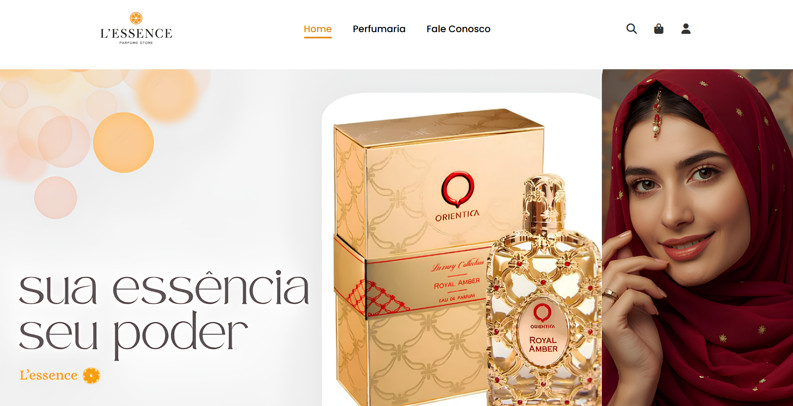
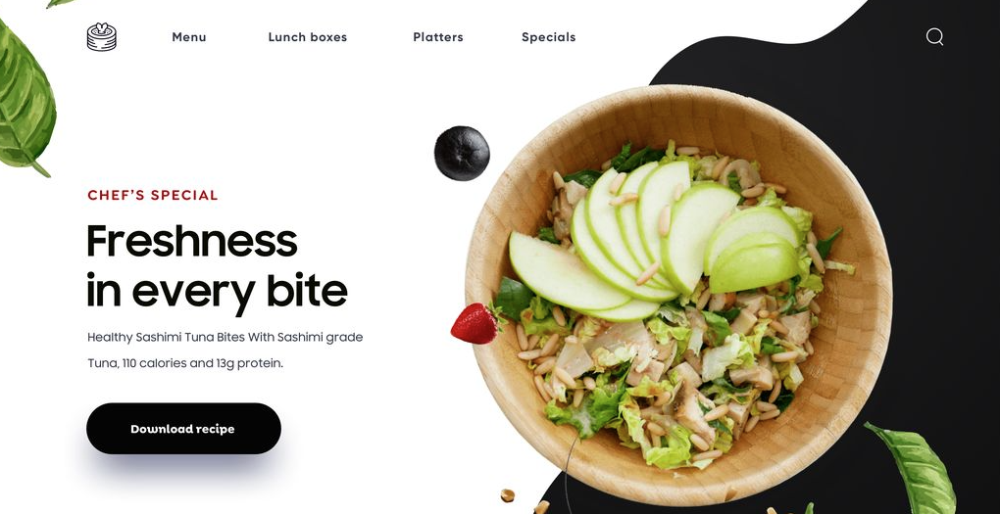
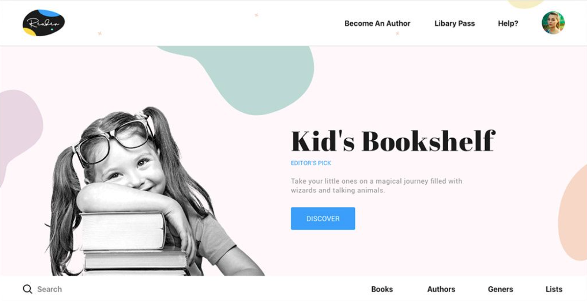
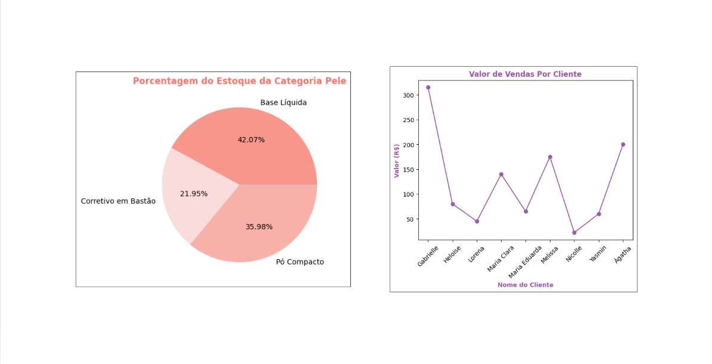
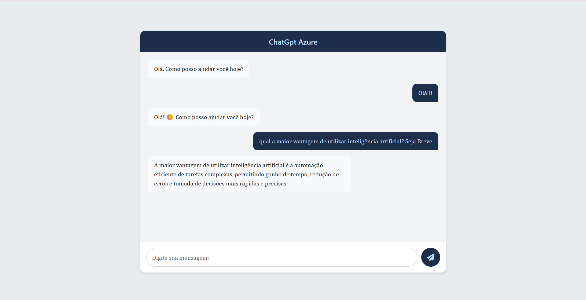

Site de e-commerce com o foco em perfumaria árabe.

Criação de Cardápio Digital para estabelecimentos.
Réplica do site da Apple.

Site realizado para automatizar serviços de uma biblioteca escolar.

Sistema de controle de estoque para melhor gerenciamento de dados.

Chatbot implementado com as mesmas técnicas do ChatGPT.
Site de simulação de agência de viagens.
Sistema com dashboards para insights em tomadas de decisões.
Sistema para controle e gerenciamento de horas complementares.
Tecnologias: